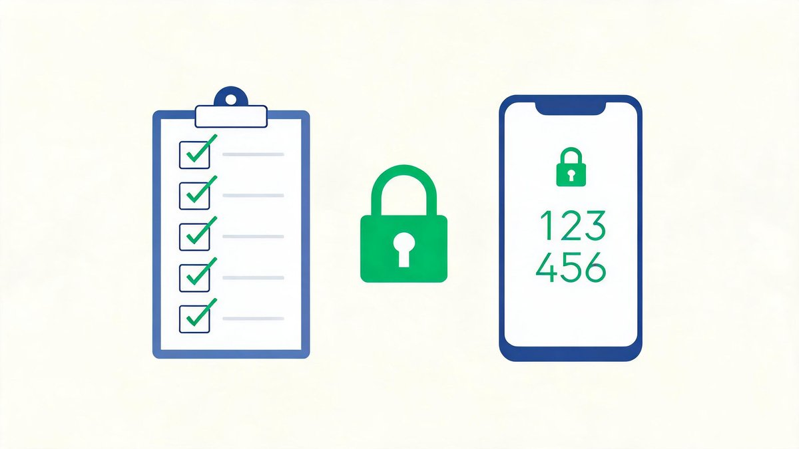
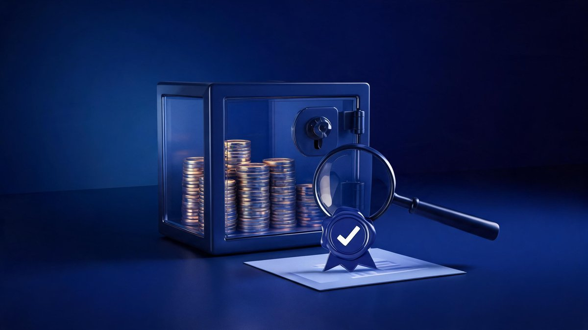

Safest crypto exchanges for beginners (2026) — a focused shortlist and a clear security checklist so you can choose with confidence. Updated: Sep 21, 2026 · Educational only · Availability varies by country.
🔑 Key Takeaways
- Safety is a checklist, not a vibe: licensing, custody design, proof of reserves, account protections, and support transparency
- Top safe picks (2026): Kraken (safety-first with room to grow), Coinbase (trusted brand, easy onboarding), Bitstamp (reliable, regulated spot)
- Before your first meaningful deposit: turn on app-based 2FA and withdrawal allow-listing
- Proof-of-reserves reports help transparency — but read the scope notes; methods differ between exchanges
- Availability and features vary by region and can change; confirm on each exchange’s support page
Security Checklist (Beginner-Friendly)
- Licensing & compliance: operates legally in your country; clear disclosures and incident reporting
- Custody design: strong operational security; separation of customer funds; clear wallet policies
- Proof of reserves / attestations: transparent asset reporting with reputable auditors where available
- Account protection: app-based 2FA, withdrawal allow-listing, device approvals, anti-phishing codes
- Support & transparency: helpful help center, fast support channels, public status page


Top Safe Picks (2026)
Kraken — Safety-first with room to grow
Why it’s safe: long operating history and strong security culture; clear incident communications. Independent reviews reinforce the reputation — security researchers at security.org note that 95% of Kraken’s crypto funds are stored in cold wallets, and Investopedia named Kraken its best overall exchange for 2026, citing “the strongest mix of security, trading tools, asset selection, pricing.”
Beginner view + Pro: start simple, then learn Pro for lower maker/taker fees.
Good for: long-term holders who value conservative security practices.
Coinbase — Trusted brand and easy onboarding
Why it’s safe: strong compliance posture in many regions; robust account protections. One honest trade-off: Paybis notes Coinbase is among the more beginner-friendly US exchanges, but simple purchases run roughly 1.5% plus spread — Advanced Trade lowers that once you’re comfortable.
Beginner UX: very smooth app; Advanced Trade lowers fees as you learn.
Good for: first-time buyers who want a polished, guided start.
Bitstamp — Reliable, regulated spot trading
Why it’s safe: one of the longest-running exchanges; clear fee tiers and a conservative product set.
Beginner fit: straightforward spot trading of major assets; bank transfers work well.

Quick Comparison
| Exchange | Safety highlights | Beginner path | Fees style | Notes |
|---|---|---|---|---|
| Kraken | Security reputation; transparent communications | Simple → Pro (limit orders) | Maker/taker tiers; instant buys cost more | Good support; DCA friendly |
| Coinbase | Strong compliance; robust account protections | Simple → Advanced Trade | Convenience fees; lower with Advanced | Excellent mobile UX |
| Bitstamp | Long-running; conservative product set | Simple spot trading | Tiered by volume | Bank transfer friendly |
FAQs
Is Binance the safest for beginners?
Safety depends on your country’s regulations and what protections an exchange offers in your region. Compare licensing, 2FA, allow-listing and transparency before choosing.
Do I need proof of reserves?
Proof-of-reserves or third-party attestations improve transparency, but read the scope notes—methods differ. Use them alongside other safety signals.
How do I avoid beginner mistakes?
Turn on app-based 2FA and withdrawal allow-listing, avoid one-tap card buys only, and start with major assets before exploring long-tail tokens.
Is Kraken the safest crypto exchange for beginners?
Kraken tops most 2026 expert lists for security thanks to its long operating history, security culture, and clear incident communications — security.org notes 95% of its crypto funds sit in cold wallets. “Safest” still depends on your region’s licensing and the account protections you enable.
What is proof of reserves?
Proof of reserves is a report — sometimes backed by a third-party attestation — showing that an exchange holds assets matching customer balances. It improves transparency, but methods and scope differ, so treat it as one signal among many.
Related Guides
- Top 3 Crypto Exchanges (2026) — Main Guide
- Best crypto exchanges for beginners (2026) — coming next in this series
- Crypto exchanges for beginners with low fees (2026) — coming next in this series
- What to look for in a beginner exchange (2026) — coming next in this series
The Bottom Line
There is no single “safest” exchange for everyone — there is a safest exchange for your country and your habits. Run the five-point checklist, prefer platforms with long operating histories and transparent communications, and switch on 2FA plus withdrawal allow-listing before you fund the account. Kraken suits safety-first holders who will grow into Pro, Coinbase suits first-timers who want polish and guidance, and Bitstamp suits conservative spot buyers. For the full side-by-side — fees, funding, and a six-step first-buy walkthrough — read our Top 3 Crypto Exchanges (2026) main guide, and harden your accounts further with our complete crypto security guide.
Sources: Investopedia — Best Crypto Exchanges and Apps (Sep 2026), security.org — 2026 Crypto Investing Guide (Kraken cold-storage figure), Paybis — Best Crypto Exchanges for Beginners 2026 (Coinbase fee note), Kraken — Most secure crypto exchange in 2026, ChangeHero — security features checklist. Educational only, not financial advice. Availability and features vary by region and can change.